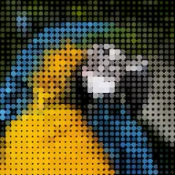

پکسل ٹائلز

لیئر کو چھوٹے پکسل پیٹرن ٹائلز کے گرڈ سے دوبارہ بناتا ہے۔ ہر ٹائل نیچے کی روشنی کے مطابق اپنے پیٹرن کا حصہ بناتا ہے، جیسے ASCII آرٹ اور موزیک کا امتزاج۔ Chaos گرڈ کو بےترتیب ٹائلز سے توڑ دیتا ہے۔
سیٹنگز
| سیٹنگ | قسم | رینج | ڈیفالٹ |
|---|---|---|---|
| پیٹرن | انتخاب | ہائی ڈیٹیل, نمبر اور حروف, افقی لکیریں, ڈاٹس, عمودی لکیریں, گرنج, حلقے, سالڈ, ترچھا بائیں, ترچھا دائیں | ڈاٹس |
| ٹون از | انتخاب | لومینینس, اوسط, سرخ, سبز, نیلا | لومینینس |
| ٹائل سائز | نمبر | 2 سے 256 تک | 16 |
| تفصیل | نمبر | 2 سے 16 تک | 8 |
| شیڈز | نمبر | 2 سے 16 تک | 8 |
| برائٹنس | نمبر | -100% سے 100% تک | 0% |
| کنٹراسٹ | نمبر | 0% سے 400% تک | 100% |
| فورگراؤنڈ | رنگ | – | #FFFFFF |
| بیک گراؤنڈ | رنگ | – | #000000 |
| اصل رنگ استعمال کریں | آن یا آف | – | آف |
| شفاف بیک گراؤنڈ | آن یا آف | – | آف |
| پیٹرن آفسیٹ | پوائنٹ (X, Y) | -5000 px سے 5000 px تک | 0 px, 0 px |
| کائوس | آن یا آف | – | آف |
| کائوس مقدار | نمبر | 0% سے 100% تک | 25% |
| رینڈم سیڈ | نمبر | 0 سے 9999 تک | 1 |
| کائوس اسپیڈ | نمبر | 0 سے 30 تک | 0 |
| رینڈم پیٹرنز | آن یا آف | – | آن |
| پکسلز فلپ کریں | آن یا آف | – | آن |
| ٹائلز اسکرمبل کریں | آن یا آف | – | آف |
| مکس | نمبر | 0% سے 100% تک | 100% |